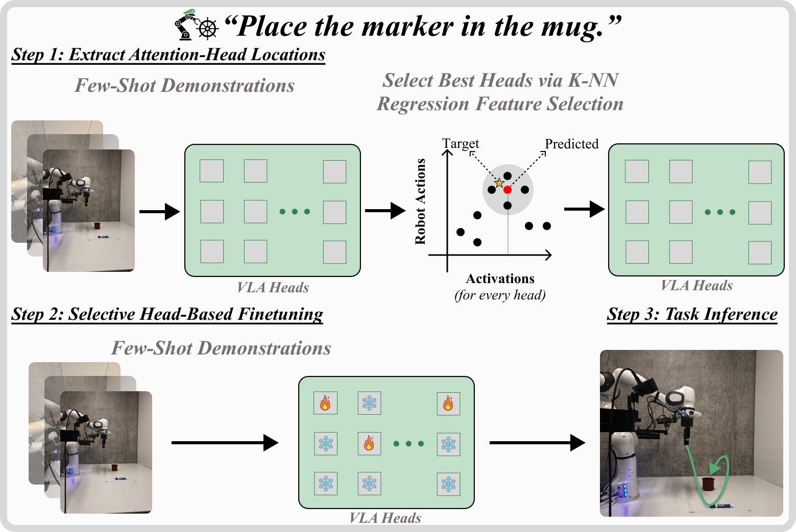
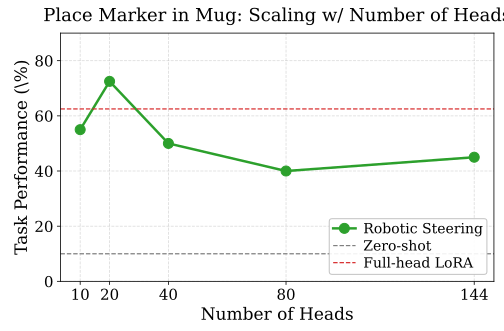
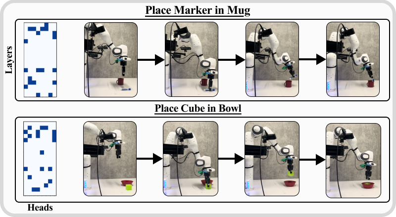

Mechanistic Finetuning of Vision-Language-Action Models via Few-Shot Demonstrations
论文笔记: Mechanistic Finetuning of Vision-Language-Action Models via Few-Shot Demonstrations
Robotic Steering 最有用的想法，是让示范数据同时回答“机器人该怎么做”和“模型该改哪里”。 作者用每个注意力头的表示做动作近邻回归，选出误差较低的头，再有选择地微调。真机结果支持这套适配方案在少量示范下的实用价值；但“选中了有用的更新位置”与“找到了物理推理机制”，证据强度相差很大。
读这篇记住四件事：用跨轨迹的动作预测误差选头；实际训练范围比“只改少数头”更广；性能和参数收益同时受到冻结策略影响；未见任务与扰动结果有改善，但不足以证明旧技能保持或物理机制已被解释。
1. 背景信息
- 作者与机构：Chancharik Mitra 等；Carnegie Mellon University、University of Southern California、UC Berkeley、MIT-IBM Watson AI Lab。
- 版本：2025-11-27 发布的 arXiv v1。本笔记只讨论用户指定版本，不据此判断后续录用或修订状态。
- 材料：官方全文与附录 A–D、版本元数据、项目页。已阅读全文并核对所选原图；未运行作者代码、未复现训练或真机实验。
2. 关键问题：示范已经说明了动作，能否进一步指定更新位置？
Golden Case：把记号笔放进杯子。 这是论文的真实任务，成功标准是笔完全进入杯内（Appendix C.1）。同一句指令背后，笔的位置、杯口几何、相机视角和抓取姿态都影响动作。Table 1 中，预训练的 $\pi_{0.5}$-DROID 在这一具体设置下零样本成功率只有 10%。
常规适配会用示范监督动作，但每个任务通常沿用同一套可训练模块。作者问：既然示范包含了当前场景需要什么动作，能否先判断哪些内部表示最贴近这些动作，再集中更新？这里新增的是用示范选择参数位置；对照 LoRA 也使用相同数量的示范，不能把本文优势解释成“有示范”对“只有语言”。
一个关键假设随之出现：某个头的表示越容易预测专家动作，更新这个头越有利于适配。 前半句是可测的读出能力，后半句才是需要下游实验支持的训练假设。
3. 关键方法：先用动作回归给头排序，再训练选中的参数切片
3.1 沿着同一个案例走一遍
给定 20 条“把记号笔放进杯子”的遥操作示范，流程如下（§3.2–3.4、Appendix B.1）：
- 抽表示：冻结 VLA，把每个时间步的图像、指令和机器人状态送入模型，记录各注意力头的激活。检索单位是时间步，不是整条轨迹；论文还用关键帧抽取降低计算量。
- 考每个头的动作读出能力：取一条示范中的某一时刻，只到其他轨迹里寻找激活最相似的 $k$ 个时刻，把它们的专家动作平均，再与当前真实动作比较。排除同轨迹邻居，可减少相邻帧几乎相同造成的虚假好成绩。
- 选位置并适配：把回归误差最低的 20 个头作为候选更新位置，使用同一批示范训练所选 LoRA 切片及辅助模块；训练损失仍沿用基座的 flow matching 目标。
- 正常部署：得到常规 checkpoint，在线接收新观测并输出动作，不再做 k-NN 检索，也不用额外注入 steering vector。
为便于理解，设当前时刻是“夹爪已经夹住笔，准备上提”。一个有用的头，应当把它与其他示范中需要相近关节动作的时刻放近，而不只是检索出“画面里也有杯子”的帧。这是对算法的示意解释，论文没有展示这一具体检索案例或逐阶段功能验证。

原文 Figure 2。看示范被使用了两次：第一次确定更新位置，第二次监督训练。图中的“火焰/雪花”概括了更新与冻结，完整训练范围要看附录 Table 7。
3.2 为什么用回归，而不只判断任务类别？
令 $z_{lh}(q)$ 是头 $(l,h)$ 在观测 $q$ 上的激活，$a_q$ 是该时刻的专家动作。将原文 Eq. 2–5 合写为：
$\mathcal Q$ 表示参与评分的时间步集合，$\tau(\cdot)$ 表示所属轨迹；每头独立检索、回归并评分，最后选 $S$ 最低的 $m=20$ 个头。余弦相似度决定“谁是邻居”，动作 MSE 决定“这个头是否值得选”。$k$ 在 $\{10,20,30,40\}$ 中按任务选择，以回归误差为依据（Appendix A.1）。筛选阶段不训练新的神经网络探针。
这个目标比“是否属于放笔任务”细：同一任务中，靠近、夹持、抬升和释放需要不同动作。Appendix A.2 / Table 6 的任务二分类实验也说明了区别：最优 20 头分类准确率 86.75%，随机 20 头已有 82.5%，最差 20 头仍有 81.25%。这些是分类准确率，不能当成随机选头微调后的机器人成功率。
复现时不能忽略 token 位置。 §3.1 写 final token，但 Appendix A.1 明确选择 first token in suffix，并在距离度量段称其为 state token。笔记按附录记录；不同架构中实际抽取的位置仍需查代码确认 [?]。作者选择它的依据是头评分更有区分度，不等于已证明该位置的动作控制效果最好。
3.3 实际训练的，不只有 Query
骨干有 18 层、每层 8 头，共 144 头；选 20 头约占 13.9%，LoRA rank 为 8（§4.1）。直觉上，修改 Query 会改变该头如何从已有信息中取用内容，Output 与后续 MLP 则影响这些信息如何进入下游计算。
正文 §3.3 用 $W'_Q=W_Q+BA$ 描述更新，且强调 Query 与 MLP；但 Appendix B.1 / Table 7 给出了更完整的实现：
| 模块 | Robotic Steering 的处理 |
|---|---|
| 主 LLM 注意力 Q、O 的 LoRA | 只更新所选头对应切片，使用带掩码的优化器 |
| 主 LLM 的 K、V LoRA | 冻结；K/V 在层内共享，不能照搬逐 Query 头的独立选择 |
| 主 LLM 的 FFN、归一化适配器 | 按附录所列适配范围更新；不能理解为每个头有独立的 MLP |
| 动作输入/输出投影、时间条件 MLP | 可训练；$\pi_0$ 还更新状态投影 |
| SigLIP 视觉编码器、Action Expert 分支 | 冻结 |
附录同时称 Gemma 的非 LoRA 权重冻结，因此 FFN 更新应结合其适配器实现理解；不能把这些描述扩写成“整个主 LLM 的 MLP 原始权重全量解冻”。
对照 Full-head LoRA 的可训练范围包含全部 LoRA 适配器和 SigLIP，Action Expert 也有可训练适配模块。两种方案不仅选头数量不同，冻结范围也不同。 这既解释了参数差距为何很大，也限制了把全部收益归因于“找对头”的说法。
4. 数据与评估：少样本真机任务，覆盖范围仍窄
实验使用 $\pi_0$ 与 $\pi_{0.5}$ 的 DROID 配置，在 Franka Emika Panda 七自由度机械臂与 Robotiq 夹爪上进行。每个任务使用 20 条遥操作示范做选头和训练，训练 5,000 steps，硬件为 2 张 RTX A6000（§4）。输入包括腕部与外部相机图像、语言和机器人状态，输出为七维关节速度与夹爪位置（Appendix B.2）。
五个任务是放笔进杯、用力按按钮、抓起方块、放方块进碗、推杯到碗边。成功由任务完成条件判定，而不是离线动作 MSE。评估在 $0.5\times0.28$ 米区域划分 $5\times8$ 网格，覆盖 40 个物体位置并随机化朝向；表格报告每任务 40 次试验的成功率（Appendix C、D.3）。
必要训练配置：batch size 32，warmup 200 steps，学习率从峰值 $2.5\times10^{-5}$ 按余弦衰减至 $2.5\times10^{-6}$（Appendix B.3）。论文没有给出主表多训练随机种子的均值、误差条或显著性检验。40 次 rollout 也不能替代对训练稳定性的测量。
5. 关键结果：整套方案有效，但选头贡献与泛化强度需要拆开
5.1 主实验：九个组合更高，一个组合退步
Table 1 的成功率如下；两种微调方法使用相同数量的示范。
| 模型与方法 | 放笔进杯 | 按按钮 | 抓方块 | 方块进碗 | 推杯到碗 |
|---|---|---|---|---|---|
| $\pi_0$ Full-head LoRA | 75% | 45% | 75% | 60% | 10% |
| $\pi_0$ Robotic Steering | 80% | 75% | 90% | 85% | 17.5% |
| $\pi_{0.5}$ Full-head LoRA | 62.5% | 90% | 70% | 65% | 20% |
| $\pi_{0.5}$ Robotic Steering | 72.5% | 85% | 77.5% | 80% | 27.5% |
收益不是统一幅度：$\pi_0$ 按按钮高 30 个百分点，$\pi_{0.5}$ 同一任务却低 5 个百分点。因此正文“所有任务匹配或超过 LoRA”的表述不符合主表；最难的推杯任务成功率也仍然偏低。
资源收益同样应分模型看（Table 1，比例按表中数字计算）：
| 基座 | 报告的可训练参数，LoRA → Steering | 训练时间，LoRA → Steering |
|---|---|---|
| $\pi_0$ | 1,785.9M → 78.8M，减少约 95.6% | 239 → 189 分钟，减少约 20.9% |
| $\pi_{0.5}$ | 1,781.3M → 74.6M，减少约 95.8% | 214 → 185 分钟，减少约 13.6% |
参数数目是作者报告值，本次没有从代码独立复算。“约少 96% 参数”指可训练参数，不代表整个模型缩小 96%，更不代表推理加速相同比例。正文所说训练时间减少 21%，也不能直接套到两个模型。主要收益是训练配置更轻，部署时无需额外检索或干预流程。
5.2 消融：MLP 很关键，选头身份的独立贡献仍缺控制
更少的头是否真的更好？ 在放笔任务的数量消融中，20 头达到 72.5%，扩到全部 144 头却只有 45%（Figure 5）。这是同一 Robotic Steering 冻结策略内部的比较，支持限制更新范围有价值；但 144 头版本仍冻结视觉编码器和动作专家，所以不能与 Full-head LoRA 的 62.5% 视作同一配置。

原文 Figure 5。看绿色曲线在 20 头处达到最高点，也看红色虚线与最右端点对应不同训练范围。单任务的最佳头数不是跨任务通用定律。
究竟训练哪些组件才有效？ Table 3 中 Queries only 为 10%，Queries + MLP 为 80%。这说明只更新被选 Query 不足以取得该表中的效果，但没有 MLP-only 对照，因此还无法判断选中的注意力头是否提供了不可替代的增益。
选头为什么用 k-NN？ 同一表里 CMA、REINFORCE、k-NN 的成功率分别为 15%、80%、80%，选头耗时分别为 58、93、0.2 分钟。正文称三者表现相近，与表格不符；按表格应理解为 k-NN 与 REINFORCE 相同、明显高于这里实现的 CMA。0.2 分钟对应已有激活后的筛选阶段；激活缓存仍需模型前向，不能写成整个选头过程免模型推理。
v1 有一个不能抹平的数字冲突：§5.1 说所有消融使用 $\pi_{0.5}$，但 Table 3 的 k-NN / Queries + MLP 是 80%，主表与 Figure 5 的对应任务是 72.5%。是否有配置或运行差异未交代 [?]。这里分别保留，不把它们拼成同一条实验结论。
5.3 迁移与扰动：相对更好，不等于保留旧能力
Table 2 在 $\pi_{0.5}$ 上考察单任务训练后的迁移：只训练放笔任务，未见的 Pick Mug 上，LoRA 为 42.5%，Steering 为 65%。这支持对这一近邻任务的相对迁移优势；但表中没有该未见任务的预训练零样本成绩，不能据此判断是否保持或超过原有能力。
放笔任务遭遇光照、形状、干扰物变化时，成功率分别为：
| 扰动 | LoRA | Robotic Steering |
|---|---|---|
| 光照变化 | 25% | 47.5% |
| 形状/外观变化 | 22.5% | 37.5% |
| 干扰物 | 30% | 40% |
绝对成功率都更高，但干扰物条件下，两者相对各自标准环境都下降 32.5 个百分点。因此不能把所有扰动上的绝对优势都解释成更小的性能退化。改变光照、杯子颜色、笔的形状与场景杂物，提供的是这些具体变化下的证据，不是跨机器人或任意环境的鲁棒性保证。
多任务训练的边界更明显：同时训练放笔与放方块后，LoRA 在 Pick Mug 上降至 0%，Steering 的分头方案与联合选头方案分别为 12.5%、20%；它们优于对应 LoRA，却都明显低于单任务训练的 65%。所以这里展示的是多任务干扰下相对较好的结果，还不足以声称实现了无干扰的技能组合。
6. Insights
6.1 “可读出动作”是好的工程筛选器，还不是物理机制解释
回归分数回答的是“这个头的表示能否找到动作相近的样本”。它可能利用物体关系，也可能利用机器人姿态或轨迹阶段；当前实验没有把这些来源分开。Figure 4 显示的是被选头的位置网格与任务照片，不能直接读成某个头负责抓握、另一个负责容器几何。

原文 Figure 4。蓝色方格说明“哪些头被选中”，右侧展示执行任务；它没有展示逐头干预怎样选择性改变某个物理变量。
我认为更准确的定位是“可解释性启发的监督式参数选择”。 若要推进到机制结论，应固定机器人状态与任务阶段，分别改变物体几何、语言目标或背景，再检查头的选择、动作读出和受控干预效果是否一起变化。否则“物理推理”只是对有效表示的一个解释。
6.2 下一步最值得补的是同预算、同冻结范围的随机选头
数量消融说明限制更新范围可能有用，MLP 消融说明辅助更新不能省，但二者都没有直接证明 k-NN 找到的具体头身份比任意同样大小的集合更好。附录的随机头结果只做任务分类，不能填上这一缺口。
若复用本文，先固定全部辅助模块、冻结范围与训练预算，比较 k-NN top-20、分层匹配的随机 20 头、最差 20 头和 MLP-only，再用多个训练种子做真机验证。这组实验能区分收益来自任务相关位置、一般性稀疏正则化，还是辅助模块本身。
6.3 可读出的位置，不一定是最值得修改的位置
选头依据是冻结模型中的动作可预测性，最终目标却是“更新后能否改善闭环控制”。两者并不必然一致：某个头可能很好地传递已有状态，但动作错误来自更下游；另一个头当前读出较弱，却可能具有更大的适配空间。
因此，一个可检验的延伸是：对同预算候选头子集，比较其初始 k-NN 分数与短程微调后的独立验证增益，再看它们能否预测最终 rollout 成功率。只有这条关系成立，才能更有把握地把“表示里有什么”转化为“该改哪里”。
7. 连接与发现
- MOC-VLA — Topic：通过示范指定更新位置的 VLA 少样本适配；与推理期表征干预的部署成本不同。
- MOC-Interpretability — Topic：连接表示读出、参数更新选择与因果机制验证，三个证据层次需要分开。
阅读边界：以上结论来自 v1 的主文、附录和原图核对，属于文献分析，不是实验复现。正文与附录的训练范围、token 位置及部分实验数字存在差异，已在相关位置保留；实际复现应先对照公开实现核实这些配置。